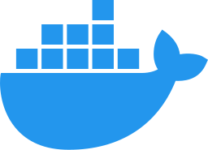
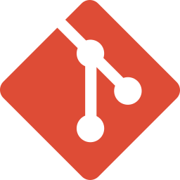
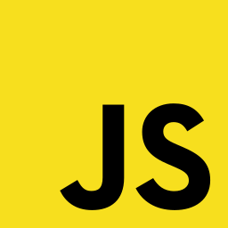
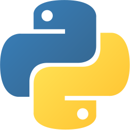

Work Experience
Software Developer
- Adarma, United Kingdom
- May 2022 to May 2023
Responsibilites:
- Agile meetings for business requirements with cross-functional teams
- Enhance platform serviceability, mainly credential health validation and automated support
- Document service failure scenarios for SLA assessment
- AWS service usage; lambda compute, storage, caching, databases, and monitoring
- Docker containerization for serverless service deployment and testing
- Update Terraform deployments to reduce development environment costs
- Migrate in-house tests to PyTest with profiling and debugging
- Troubleshoot and debug using log-based monitoring platforms
- Implement security enhancements using historical event data to minimize redundancy
- Boost security with cross-site script filtering and user input validation
- CI/CD code quality assurance and schema update pipelines
- Handle minor front-end enhancements and bug fixes
SOC Analyst
- Adarma, United Kingdom
- August 2021 to May 2022
Responsibilites:
- Monitoring clients' IT infrastructures for threats
- Triage, investigate and escalate security incidents
- Run scheduled Splunk searches on client (SIEM) infrastructure
- Conducting monitoring for new security rule development
- Hunting for the newest Indicators of Compromise (IoC) within client estates
- Assisting with response process workbook development
- Verifying security event detection with tools and databases to confirm reputation
- Updating thresholds, whitelists and threat lists for new and existing security rules
Student
- Edinburgh Napier University, United Kingdom
- August 2019 to June 2021
Responsibilites:
- Developing a dissertation project using existing photogrammetry solutions for image tracking purposes
- Analysing existing source code for vulnerabilities using secure software development practices
- Collaborating with a team on web technologies group project for employee rota management system
- Python scripting for network packet analysis, filtering and geographical location lookup
- Analysing file and operating system artifacts for forensic evidence
- Executing and protecting against attacks in an IoT network simulator
- Basic network server penetration testing
Personal Projects
Distributed object storage database and client-server architecture filesystem (WIP)
Abstracted multiple-access storage with various backends, auto-discovering and bootstrapping hosts forming consensus:
- Ephemeral, master-less and distributed architecture with consensus conflict resolution
- Extensible framework for additional storage implementations and wrappers
- Multi-paradigm distributed database services and compute providers
- File-system in Userspace (FUSE) storage mounting with cluster-level multiple-access
- Network auto-discovery service configuration and bootstrapping
- No external service dependencies
Education
Undergraduate Study at Edinburgh Napier University (2019 to 2021):
- BEng (Hons) Cybersecurity and Forensics (3rd Year Entry) with First Class Honours [2019 to 2021]
Higher Education at Edinburgh College (2016 to 2019):
- Higher National Diploma Computing: Networking - Grade A (SQCF Level 8) [2017 to 2019]
- National Certificate Computing: Technical Support (SQCF Level 6) [2016 to 2017]
Additional Certifications:
Skills
Programming Languages:
- Python
- JavaScript
- TypeScript
- HTML
- CSS
- SQL
Tooling:
- Git
- GitLab CI/CD
- Linux/Unix
- Docker
- Terraform
- PyTest
Services:
- AWS
- Splunk
- PostgreSQL
- GitLab
References
- Adarma Security - PeopleTeam@adarma.com
- Dr Sean McKeown (Edinburgh Napier University) - S.McKeown@napier.ac.uk